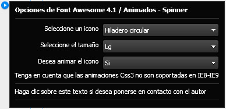
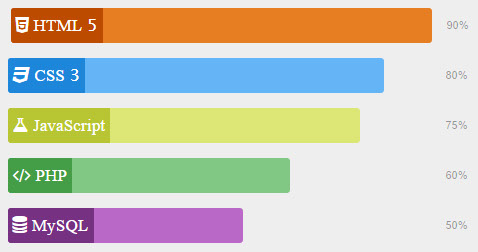

Font Awesome
4.1
Adobe Muse CC 2014
Font Awesome 4.1 para Adobe Muse cc 2014
Usar Font Awesome en Adobe Muse nunca fue tan fácil, con este Widget usted podrá añadir impresionantes iconos a sus diseños, elegir el color, seleccionar uno de los 5 tamaños preestablecidos o darle el tamaño que desee a través de la herramienta de texto. Pero eso no es todo también podrás animar los iconos Spinner.

Twittealo para descargar
El widget Font Awesome 4.1 tiene un maravilloso costo de un Twitt, así más personas conocerán de su existencia y juntos estaremos contribuyendo con la comunidad Adobe Muse.
Características
También te puede interesar
- Todos los iconos de Font Awesome 4.1 organizados en 10 categorías
- 5 Tamaños preestablecidos o elegir el tamaño deseado con la herramienta de texto
- Personalizar el color del icono
- Elegir animar los iconos Spinner

Barra de Habilidades para Adobe Muse